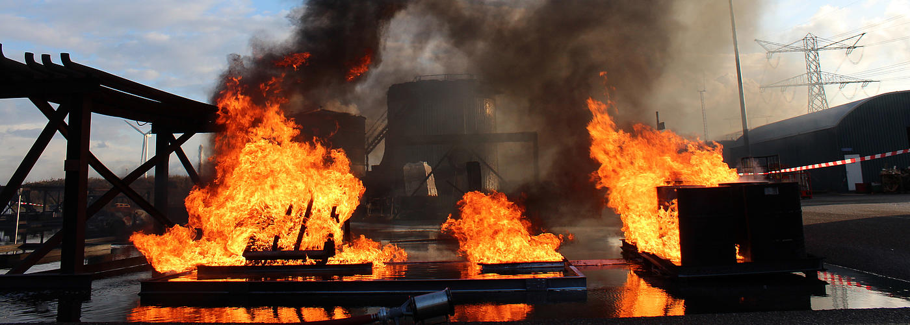

I explored the current usage of drones, one of the upcoming and emerging technologies, through research and a series of studies in various mediums. The goal of this project was to design in a way that would inform and tell a narrative through this topic.
A drone, also known as an Unmanned Aerial Vehicle, is a tiny aircraft without a human pilot. They were originally intended for military use, but currently have expanded to the commercial market.
This market includes:
Product Deliveries, Policing and Surveillance, Photography and Videography, Responses to Emergencies and Natural Disasters
Drone company called Precision Hawk partnered with North Carolina Department of Transportation (NCDOT) after the effects of Hurricane Florence. They flew more than 260 drones and captured more than 8000 photos and videos of roads, highways, ferries.
Working to contain disasters such as fire and gas leakages through drones.
Provides data and analyzes it right away for an effective immediate plan for provention.
The first study I made was an infographic on the working parts of a drone. Through creating this, it forced me to research about the mechanics in order to label the drone properly. This is something that most people often do not think about when interacting with a drone.
For my second study, I designed a game based off the real life scenario of military drones and drones used for disaster relief. Dronez is a physical game in which you are on a plot of land with the goal of finding a missing person that needs to be saved.


Shuffle the 24 tiles and randomly place them 'Dronez' side face up on a 5x6 grid. This forms the playspace and your pawns will move on it like a game board.
Each player is given a role as either a rescue drone or attack drone. The goal of the rescue drone is to find the missing person and diffuse any surrounding fire. The goal of the attack drone is to find the missing person and set all the surrounding tiles on fire. Each player will hold two cards that will interchange: Diffuse, Fire, and Reveal. Reveal will allow you to flip the tile over that is adjacent to you. The diffuse card can be used if there is a tile on fire, and a fire card can be used if a tile is regular land.
PROCESS: I started this by making the graphics and then cutting them out into square tiles. I did the same for the action cards, but pasted them on a deck of playing cards.


As a final project, I chose to iterate off of my 3D study and do a playtest of the game with a group of people. I documented three people playing the game, and then did interviews with each of them asking them about their feelings, evaluations, and thoughts about drones in today's current society.